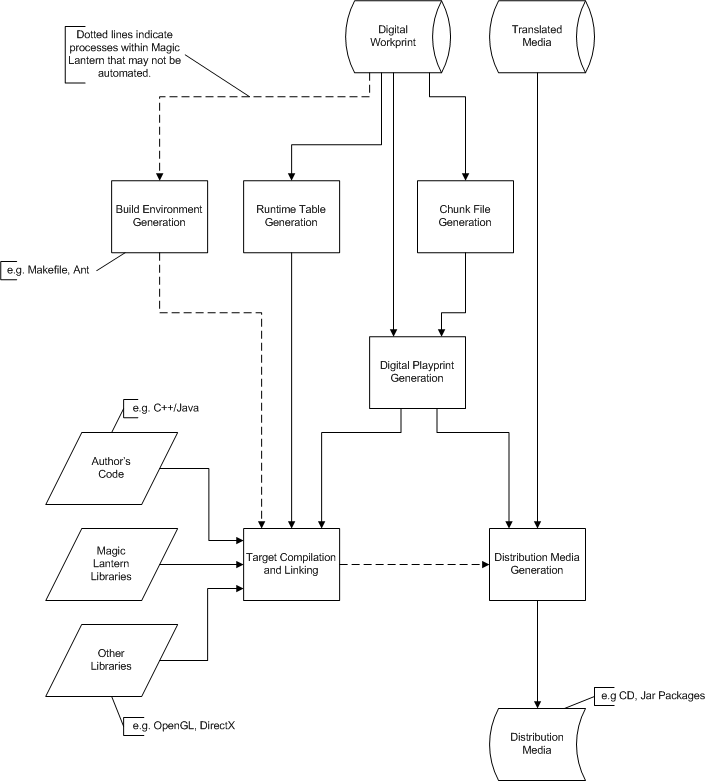

The Magic Lantern targeting process is part of the development of an interactive title. This process uses the title components and makes them playable on a specific target, such as a PC running Windows DirectX, a game console or a set-top box.
The targeting process can be used during all phases of title development. At the start of title development, it is used to prototype the title on the target, to explore the development limits, and to view the media on the delivery platform. As development progresses, the targeting process is necessary to help refine the title, keeping it efficient. When the development is complete, targeting is the final step in producing a platformspecific title that is ready to be transferred to the distribution media.
The targeting process uses several programs that help prepare an interactive title for its execution on its target device. The targeting process takes the Digital Workprint (DWP) and its associated media assets as input and creates three output products. These three principal products of the targeting process are:
There are several key steps in the targeting process. Title developers can also bypass the default solution and implement their own custom scheme for each step.
These are the key targeting process steps:
Figure 2.2.1 illustrates the major components of the targeting process. It shows the steps outlined above and the flow of different key pieces of data.

Figure 2.2.1: Target Mastering Process
The Digital Playprint Script Interpreter (genppscript) assembles the Digital Playprint from chunks stored in individual files. These chunks are the compiled actor group chunk files (a cast), media reference chunk files, scene chunk files and set chunk files. A Digital Playprint Generation Script drives the Digital Playprint Script Interpreter. The language for the script is TCL-based. It uses commands to lay out the actual Playprint. The Digital Playprint Script Interpreter also generates primitives for converting symbolic Rehearsal Player names into numeric runtime player names. It places these runtime player names in files that must be compiled and linked against the Runtime Engine SDK libraries.
The Digital Playprint Generation Script is created with the Digital Playprint Script Generator tool that reads the Digital Workprint. The script may be customized or replaceable by the title programmer.
Table 2.2.1 identifies the Magic Lantern tools used during the targeting process.
Magic Lantern Tool |
Description |
Generated Artifacts |
Documentation |
gengroup |
Generate Actor Group chunks |
ActorID.java, GroupID.java, group chunk files (1 .chk file per Group in the DWP) |
gengroup manual page |
genscene |
Generate Scene chunks |
SceneID.java, scene chunk files (1 .chk
file per Scene in the DWP) |
genscene manual page |
genmedia |
Generate Media Reference chunks |
MediaBom.txt, media reference chunk files
(1 .chk file per Media Reference in the DWP) |
genmedia manual page |
gentables |
Generate Digital Playprint Tables |
MleRuntimeTables.java |
gentables manual page |
genppscript |
Generate DPP TCL Script |
playprint.tcl |
genppscript manual page |
gendpp |
Generate Digital Playprint |
DppTOC.java, Digital Playprint file (1
.dpp file) |
gendpp manual page |